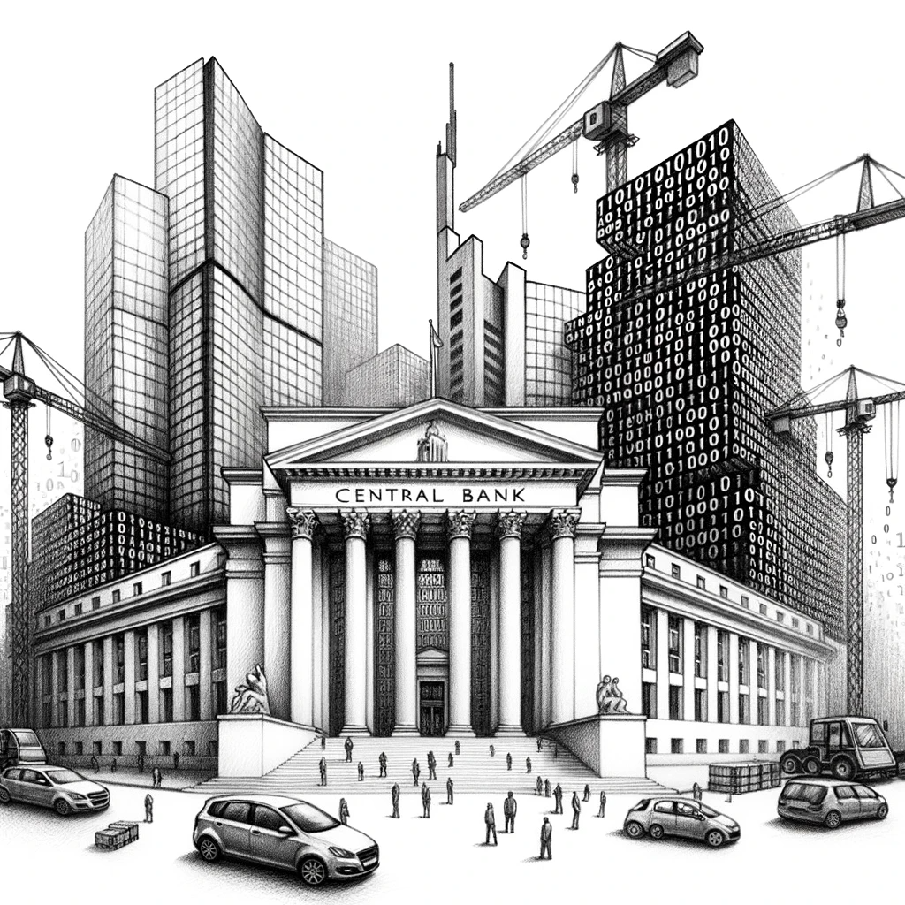
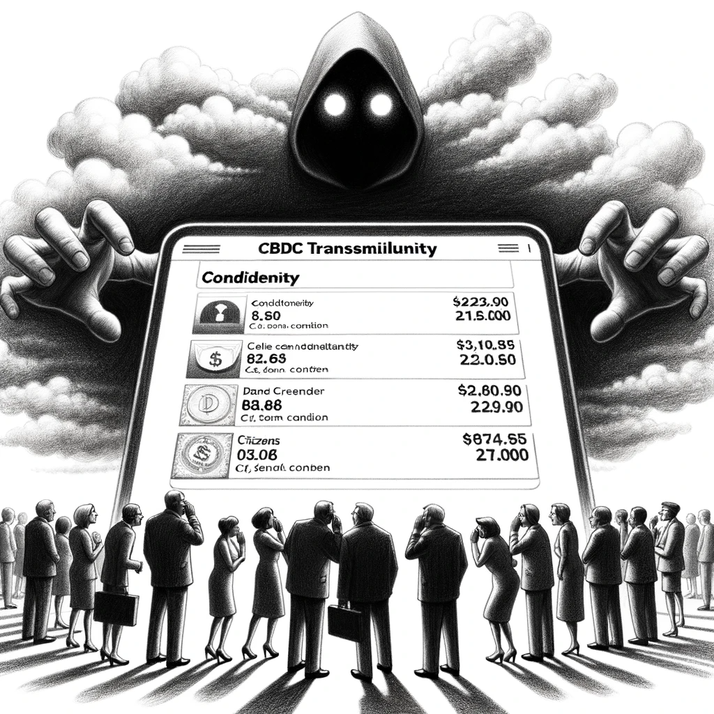

Технологический уклад¶
Единство¶
Мир един по своей природе. В нём нет ничего, что не влияло бы на всё. Каждое событие, каждое действие, и каждое живое существо являются частью бесконечной взаимосвязанной цепи причин и следствий, где взмах крыла бабочки может вызвать катастрофу.
!!!
Мир - всё, что существует и происходит в природе.
Мир всегда меняется. Он, как как сложная система наблюдаемых нами взаимосвязанных предметов и процессов Вселенной, непрерывно течёт из прошлого - в настоящее, а из настоящего - в будущее.
Мы наблюдаем этот мир во времени, познаём его, и создаём его, действуя или бездействуя во множестве его вызовах каждый день. Мы - это каждый из нас, кто живёт, жил или будет жить на Земле и за её пределами. Человечество.
Закон увеличения энтропии (физика) говорит, что всё со временем разрушается само. И если мы не прикладываем коллективных целенаправленных усилий к поддержанию гармонии в нашем мире, то рано или поздно он будет разрушен. Мы буквально должны строить гармонию в мире, потому как без нас он разрушится сам. Должны самим себе и будущим поколениям нас же.
Чтобы жить в гармоничном мире, мы должны обладать знаниями о нём. Невозможно создать гармонию, если не знаешь, где, с чем и как. Нам нужны знания. Гармоничный мир строится на знаниях и только на них.
Чем большими знаниями о предметах и процессах в прошлом и настоящем мы обладаем, тем точнее будут наши прогнозы будущего, и тем эффективнее наша деятельность в настоящем по созданию гармонии на Земле.
Платформа знаний¶
!!!
Знание - субъективный образ наших ощущений и осмыслений взаимосвязанных предметов и процессов Вселенной.
Каждый человек с рождения стремится построить свой Мир. Начиная со звуков и прикосновений, продолжая всё более и более сложным способами, маленький человек познаёт Вселенную, наблюдая её в процессах и предметах. В результате, у маленького человека формируется взаимосвязанный образ знаний о Вселенной, или, его персональный Мир.
Каждый такой образ знаний - субъективен, он основан на личном практическом опыте познания того человека, который его проживал. Во всём мире не найдётся двух людей с одинаковыми образами знаний о Вселенной. У каждого человека свой, уникальный Мир, который был познан индивидуально и субъективно.
Айзек Азимов писал, что два человека, каждый из которых верит в безупречность своих знаний о мире, способны найти бесконечное количество логических комбинаций и взаимосвязей, которые безупречно докажут, что их Мир - правильный. И одновременно с этим, ни один из них не сможет доказать обратное, что Мир другого - ложный.
Наш Мир основан на языке, на котором мы говорим для описания процессов и предметов Вселенной. Язык состоит из слов, а каждое слово - что-то значит. Но для каждого это что-то - оно своё, индивидуальное.
Отсюда возникает бесконечный круг недопонимания, который требует постоянного уточнения, а что же в действительности имел ввиду человек, употребляя то или иное слово и что же он хотел этим сказать?
Мы говорим на разных языках, даже если нам и кажется, что на одном. И эту проблему невозможно решить без специальных инструментов работы со знаниями. Нам жизненно-необходима единая, живая, непротиворечивая и действующая модель знаний о Вселенной, которая бы состояла из наших индивидуальных миров и наделяла бы их смыслом.
Смысл знаний¶
!!!
Смысл знаний - это польза, которую мы можем извлечь из Мира.
Когда мы знаем что-то о Вселенной, что нужно другим людям, то люди благодарят нас деньгами. Получая оплату за свои знания - мы получаем объективную пользу от Мира.
Смысл знаний определяется их полезным влиянием на нас и наш мир. Те знания, которые полезно влияют - и обладают смыслом. И наоборот, у знаний, у которых нет полезного влияния - нет и смысла. Они по определению бессмысленны.
Практика - критерий знания. Если мы применяем что-то, то мы это знаем. Если знаем, то мы это применяем. Если знание полезно - в нём есть смысл. И этот смысл мы можем объективно измерить.
Единая платформа знаний должна не только объединить наши субъективные миры, но и проверить их в действии. Тогда и только тогда мы получим источник знаний, который содержит в себе общий смысл существования, и смысл существования каждого персонального Мира, из которого он состоит.
Язык знаний¶
Все наши знания о мире основаны на аксиомах, которые мы принимаем на веру. Везде на Земле яблоки падают вниз, целое больше частного, а между двумя точками можно провести только одну прямую. Эти аксиомы не требуют доказательств. Мы все это знаем, и в этом мы едины.
На их основе аксиом, мы строим весь наш образ знаний о мире. Нам не нужно доказывать себе или кому-либо еще, что мы не хотим по потолку и не дышим водой. Мы просто это знаем, и совершенно абсурдно пытаться доказать обратное. Вселенная закодирована знаниями, а мы изучаем её код.
!!!
Явление - предмет или процесс Вселенной.
Все наши знания о Вселенной, как и сама Вселенная, состоят из взаимосвязанных и повторяющихся предметов и процессов - т.е. явлений. Что есть общего во всём? Каждый предмет и процесс обладает своей формой, содержанием и поведением.
!!!
Форма — это контур взаимосвязанных явлений предметов и процессов Вселенной.
Мы всегда наблюдаем формы. Например, различные формы облака электронов кристаллической решетки создаёт совершенно различные материалы по своим качествам и свойствам. Например, алмаз и графит — оба состоят из углерода, но их свойства различны из-за разной кристаллической структуры. Первый очень тверд, а вторым пишут карандаши.
Все процессы также обладают своей формой и отличаются условиями, в которых они протекают. Например, скорость охлаждения расплавленного металла сильно влияет на его механические свойства. Меняя форму процесса охлаждения раскалённого металла - мы меняем его содержание и поведение.
!!!
Содержание - это совокупность предметов и процессов в форме.
Содержание определяет структуру и состав элементов, из которой состоит форма. Оно может включать в себя другие предметы и процессы, которые протекают на более низких уровнях. Например, компьютерная программа для пользователя содержит в себе кнопки, но чуть глубже - базу данных и программный код, а еще глубже - электронные сигналы с частотой многих миллионов раз в секунду определённой формы и содержания, что и определяет поведение программы на уровне кнопок.
Содержание - как фрактал, который раскрывает в себе бесконечное количество проекций форм, содержаний и поведений различных предметов и процессов Вселенной. Где каждый уровень содержания отражает свою форму предметов и процессов, и при этом, сохраняет связь с более глубокими и поверхностными уровнями, создавая многоуровневую иерархию взаимосвязи всего со всем.
!!!
Поведение - это реакция предметов и процессов на внешние и внутренние стимулы.
Поведение определяет то, как предметы и процессы изменяют свою форму под внешним и внутренним воздействием. Например, металл становится жидким при нагревании, а вода становится твердой при охлаждении. Мы используем поведение предметов и процессов для извлечения пользы, т.е. именно поведение предоставляет нам возможность извлекать пользу и смысл знания.
Мы познаём поведение процессов и предметов Вселенной, которые определяется формой и содержанием и поведением связанных с ними процессов и предметов, которые, в свою очередь, обладают своими связями, и так далее - от квантового и до космического уровней. Вселенная буквально закодирована знаниями. Знания - это код Вселенной.
Для того, чтобы познать этот код, нам необходим непротиворевый язык описания знаний. На котором все явления Вселенной могут быть непротиворечивы описано с помощью формы, содержания и поведения её предметов и процессов, а также, их взаимное влияние друг на друга.
Этот язык описания - это сами знания. Всё может быть описано во Вселенной на основе аксиом, из которых исходят люди в познании Мира.
!!!
Знания - язык описания Вселенной в формах, содержаниях и поведениях взаимосвязанных явлений.
Для гармоничного роста как единого живого организма, людям необходима операционная система для управления знаниями. Нам необходимо создать образный язык описания знаний и систему по их непрерывной проверке в действии. Обладая такой визуальной моделью практически-применимых знаний, можно сказать, что мы построили единое сознание.
Система управления¶
Мы можем выделить бесконечное количество сфер, уровней, срезов, или проекций знаний. Все они - это формы, которую мы принимаем для удобного описания явлений Вселенной. Вот лишь некоторые из сфер: персональная, пространственная, временная, организационная, энергетическая, информационная, когнитивная, биологическая, химическая, физическая, социальная, технологическая, экономическая, социальная, экологическая, и так далее.
Наш мозг подключает срезы необходимых нам знаний автоматически. Вне зависимости от того, насколько глубоки наши уровни знаний и в каких сферах, мы используем то, что есть и расширяем их этим, познавая новое.
Для создания системы управления знаниями, нам необходимо выделить те сферы, на которые мы сможем спроецировать все знания и получить их измеримый смысл. Вот эти сферы:
- Концептуальный уровень. В этой сфере происходит поиск основополагающих идей и ценностей, которые помогают ответить на вопрос: "зачем?" мы это делаем. Здесь формируется глубинная мотивация нашей деятельности. И эта сфера подстраивает под себя всё, являясь высшей сферой управления будущим.
- Информационно-технологический уровень. В этой сфере происходит поиск информационных технологий для управления сферами знаний в связи с поставленными на концептуальном уровне целями.
- Системно-ориентированный уровень. В этой сфере происходит создание систем управления знаниями. Здесь все сферы знаний могут объединяться в бесконечном количестве своих пересечений для формирования новой системы, которая необходима сегодня, и возможно, уже не будет необходима завтра. Или, той системы, которые необходима именно вам для жизни. Здесь формируется производственный процесс над предметами.
- Предметно-ориентированный уровень. В этой сфере все уровни управления знаниями конкретизируются до предметов в действии. Здесь происходит фактическое управление конкретными физическими объектами с определенными характеристиками.
Все зависимости в этих сферах направлены от внешней, предметно-ориентированной сферы, к внутренней, концептуальной. На поверхности находятся конкретные предметы управления, глубже - процессы и их представления, ещё глубже - технологии управления, и в самой глубине - причина, по которой всё это происходит.
Система управления знаниями включает в себя 4 уровня управления, сквозь которые проходит управляющее воздействие. На каждом уровне всегда известно, чем конкретно происходит управление на внешних уровнях, и почему это происходит на внутренних.
Новый технологический уклад¶
Мы живем в эпоху, где все управляется информационным влиянием. Экономический рост сегодня возможен только там, где есть внимание, сосредоточенное на информации. Управлеине всей информацией сегодня происходит с помощью компьютерных программ.
Каждый день мы используем компьтерные программы - от будильника до мессенджеров или систем управления проектами. Но мы не встретим ничего принципиально нового, что мы уже не видели у других программ. Т.е. можно сказать, что количество типов форм устройств ввода и вывода информации во всех программах - ограничено.
Устройством ввода информации является текстовое поле, сенсорный экран, клавиатура, камера телефона, микрофон, и что угодно еще, что может сообщить компьютерной программе информацию. А выводом из программы является экран телефона, VR-очки, принтер, и так далее. У всех программ есть принципиально одинаковые типы устройств ввода и вывода информации.
Однако, мы наблюдаем безчисленное множество программ, которые почти никак не соединяются друг с другом. Информация из приложения для заметок Notion не может быть отображена в Google-документе, два приложения-задачника не знают о существовании друг друга. Почему?
Все программы информационной эпохи технически невозможно объединить в одну большую программу из-за постоянно возрастающей сложности каждой из них. Ресурсы, необходимые по взаимной интеграции хотя бы нескольких приложений, растут экспоненциально, в то время, как приложений в мире гораздо больше, чем несколько.
Т.е. программы, которые мы используем, как и наш язык - несовместим. Все они говорят на своих собственных программных языках. Мы вынуждены мириться с ограничениями каждой из них и не можем получить преимущества всех одновременно. В одних ситуациях хороша одна, а в других - другая, и всё время приходится искать компромисс.
Если провести аналогию, то мы находимся в ситуации 19-века, когда вместо двигателя внутреннего сгорания люди использовали великое множество различных транспортных средств, от ослов и верблюдов до карет и повозок. Однако, с появлением двигателя внутреннего сгорания, все эти средства транспорта были заменены, по сути, одним. Так, неэффективное разнообразие заменилось эффективной простотой.
Новый технологический уклад - это набор технологий, которые возникают после завершения старого уклада. Если бы Эдиссон не изобрел лампочку, то у нас бы небыло света. Если бы Этьен Ленуар не построил двигатель, у нас бы небыло транспорта. Если бы небыло Тьюринга - у нас небыло бы компьютеров. Каждый из них внёс вклад в создание закрывающей технологии для старого уклада, благодаря готовым, и открывался новый уклад.
Сегодня мы на пороге нового уклада, но для перехода, необходимо закрыть старый. Закрытие старого уклада должно быть произведено по аналогии со всеми предыдущими - неэффективное разнообразие заменяется эффективной простотой.
Для перехода в новый пост-информационный технологический уклад, которым правят знания, великое множество приложений с идентичными типами форм ввода и вывода информации, должны замениться одним, универсальным, и изначально единой моделью практически-применимых знаний.
И именно это мы ожидаем в новом информационном укладе для всех программ и приложений, которые используют люди сегодня для обмена информацией.
Сегодня мы обладаем великим множеством компьютерных программ, каждая из которых принципиально идентична всем другим. А завтра, все другие программы будут заменены одной, из которой, возможно получить все другие во всех доступных формах.
Представим себе операционную систему, которая создана для управления знаниями. Где каждая молекула знаний - это практически-применимая единица информации о форме, содержании и поведении предметов и процессов во Вселенной. Знания - они как нейроны в цифровом мозге, а связи между ними которыми постоянно изменяются. Какие-то растут, а какие-то умирают. Появляются новые области, а старые забываются.
Операционная система знаний позволит автоматически (без участия программистов) создавать изначально единые программы, которые работают на основе единой модели знаний и используют все возможные формы ввода и вывода информации.
Операционная система знаний может принимать любую форму и исполнятся на любом устройстве - от сайта и мобильного приложения до AR, VR и персонального ИИ-помощника. Для неё они - просто устройства ввода и вывода информации из единого хранилища знаний.
Подобно мозгу, операционная система будет активировать те участки своих знаний, которые необходимы каждому её пользователю. Если Вы - инженер, вам нужен особый рабочий стол на всех ваших устройствах, а если стоматолог - то ваш рабочий стол совсем другой. Операционная система соберёт и отобразит для вас ту область знания, которая необходима именно вам.
И если в Windows мы управляем окнами программ, каждая из которых пишется быть применимой только согласно своему сценарию, который заложили для пользователя разработчики, то операционная система знаний автоматически и без участия программистов в любой момент создаст для нас неограниченное количество необходимых нам программ.
Такая операционная система будет подстраивается под каждого пользователя, окутывая его облаком необходимых ему знаний и предоставляя их в необходимой ему форме - от приложения в телефоне, до сайта, VR-пространства или голосом его ИИ-помощника.
Результатом создания операционной системы для знаний станет единая вероятностная исполняемая модель мира. Она позволит экспоненциально увеличить эффективность использования ограниченных ресурсов, что и откроет дверь в Новый Рейнессанс.
Подробнее: ссылка.
Экономическая действительность¶
Презрение кредита¶
Великие мыслители Аристотель и Платон, осуждали практику займов ради прибыли. Даже в библейские времена, две тысячи лет назад, Иисус предостерегал людей от служения деньгам, утверждая, что человек не может служить одновременно "и Богу, и Маммоне".
В Евангелии от Матфея (глава 21, стихи 12-13), когда Иисус пришел в храм в Иерусалиме и перевернул столы менял, которые тогда занимались ростовщичеством:
Евангелие от Матфея, глава 21, стихи 12-13
И вошел Иисус в храм Божий и изгнал всех продающих и покупающих в храме, и столы менял и скамьи продающих голубей переверг. И говорит им: написано: "Дом мой дом молитвы наречется", а вы делаете его вертепом разбойничим."
В Православии взимание ссудного процента всегда считалось серьезным грехом. Этот акт можно рассматривать как символ противостояния Христианства - практикам спекуляции и ростовщичества.
Однако, с приходом Реформации, когда католическая церковь раскололась, начались попытки обосновать практику взимания ссудного процента. В итоге, Протестантская реформация поощрила ростовщичество, которое позднее стало именоваться "банковским делом".
Интересно
Слово "bank" в английском языке первоначально означало стол или прилавок, где древние менялы занимались спекуляциями и ростовщичеством.
Исламское мировоззрение также считает ссудный процент (или рибу, лихва, лихоимство), нечестной и аморальной практикой. В Коране, священной книге мусульман, на ссудный процент смотрят с осуждением, приравнивая его к наиболее тяжелым грехам:
Коран, Сура 2:275-279
Те, которые пожирают лихву, восстанут, как восстает тот, кого дьявол поверг своим прикосновением. Это потому, что они говорили: «Воистину, торговля подобна лихоимству». Но Аллах дозволил торговлю и запретил лихоимство.
Аллах уничтожает лихву и приумножает пожертвования.
О те, которые уверовали! Бойтесь Аллаха и не берите оставшуюся часть лихвы, если только вы являетесь верующими.
Но если вы не сделаете этого, то знайте, что Аллах и Его Посланник объявляют вам войну. А если вы раскаетесь, то вам останется ваш первоначальный капитал.
Коран разрешает торговлю и одновременно запрещает ростовщичество. Верующим настоятельно рекомендуется избегать его, но если они продолжают эту практику, то они сталкиваются с угрозой объявления войны от Аллаха и Его Посланника. Это подчеркивает насколько глубоко коренится осуждение ссудного процента в исламской культуре и теологии.
Аристотель до Иисуса и Аллаха определял экономику как осознанную деятельность по созданию благ, необходимых для удовлетворения потребностей человека и общества. Антиподом экономике он видел хрематистику - учение об индивидуальном обогащении.
Сегодня в Российской экономике доминирует хрематистическое мышление. Именно оно лежит в основе спекулятивной модели экономики, которая опирается на идеи либерализма. Всё это привело к тому, что объем реальной экономики, где создаются и используются реальные товары и услуги, существенно уступил место финансовым манипуляциям и спекуляциям.
И вот так просто, на наших глазах, всего за несколько десятилетий с распада СССР, выросла пропасть между тем, что действительно важно и ценно для людей, и тем, что презирается ведущими мировыми религиями, заперев людей с чуждой им стороны.
Большая перезагрузка¶
Мировая экономическая система непрерывно накапливает долги, которые невозможно отдать. Она в самом своём основании содержит бомбу замедленного действия - положительный ссудный процент, под который деньги выдаются в кредит.
В 2024 году мировой долг превысил 100 трлн $ и увеличился на 40% всего за 4 года. Эта тенденция - взрывная, и исторически, она всегда завершается катастрофическим падением.
Катастрофа падения заключается в том, что мировой бизнес и простые люди в какой-то момент потеряют доступ к кредитным деньгам и ко многим счетам во многих банках из-за паузы, которая потребуется на перезагрузку.
Перезагрузка, как информационная волна панических настроений вкладчиков, обрушит банковскую систему, основанную на пирамидном основании положительного ссудного процента - банковский сектор рухнет.
Все долги будут списаны. А обязательства по договорам и ценным бумагам - сорваны. Это поставит под сомнение само основание человеческих отношений - договор. Что значит - договориться, в системе, есть есть неизвестная, от нас независящая, которую в дальнейшем назовут форс-мажором. Однако, эта неизвестная была заранее известна.
Точного прогноза когда это произойдёт и где начнется - невозможно, но есть индикатор, который демонстрирует приближение к этому событирю. И с его помощью мы можем наблюдать за волновым планом движения к поставленным целям.
Перезагрузка - неизбежна.
Предел капитализма¶
Новые деньги вновь вкладываются в новые рынки, но рано или поздно рынки опять меняются - спрос насыщается, и ситуация вновь повторяется. Кажется, что это может происходить бесконечно, однако, в рамках всей экономической системы долги только нарастают, и в итоге, возникает ситуация, при которой бизнес не может более кредитоваться, а значит, не может платить заработные платы, а значит, люди не могут тратить, а значит, другой бизнес перестаёт получать прибыль там, где раньше получал - пузырь долгов начинает сжиматься.
Теперь, добавим к этому аналогичную ситуацию с частным кредитованием. Человек, желающий лучшей жизни прямо сейчас, не откладывая берёт кредит в счет будущих доходов. Однако, чтобы жить еще лучше, ему нужно еще кредит. И еще, пока позволяет его бюджет входящей заработной платы, которая, как видно выше, напрямую зависит от доходов всех работотадетелей и состояния рынков.
Система положительного ссудного процента способна функционировать только за счёт расширения рынков и сопутствующего технологического прогресса. Когда расширения рынков более не происходит, и рывка технологического прогресса, который влечет за собой открытие новых рынков также не происходит, то экономическая система положительного ссудного процента начинает сжиматься.
И это сжатие будет продолжаться до тех пор, пока баланс стоимости товаров и денег в экономики не будут восстановлены. Такое списание, которое влечет за собой сокращение покупательской способности населения в несколько раз не может быть объяснено никаким образом, кроме как фатальными "форс-мажорами", вроде тех, которые мы наблюдаем с 2022 года. Но всё началось гораздно раньше, а по-другому быть и не могло.
Утилизация потенциала¶
Настроения людей, как и рынки, развиваются по логистической кривой между своими крайними состояниями. В случае торговли виртуальными инструментами на финансовых рынках сталкиваются настроения групп людей с разными уровнями требований к прибыли и терпимости к риску.
Однако, у всех групп людей торговля на финансовых рынках проистекает из двух базовых состояний: "мания" и "паника". Все решения, которые принимает трейдер, каким бы он профессиональным небыл, всегда можно отнести к одному из двух этих крайних состояний, при которых он или покупает или продаёт.
Смена настроения одного человека происходит не моментально, а сквозь 3 фазы, при которых он изменяет своё отношение к происходящему на рынке и принимает решение войти или выйти из сделки. Сумма же всех настроений всех трейдеров на рынке описывается графиком движения цены торгового инструмента.
Торговля на свободном рынке виртуальными инструментами - это игра, в которой побеждает тот, кто действует против толпы, оставляя её без денег. Эта торговля не производит ничего, кроме горя тех людей, кто вложил туда деньги и потерял всё.
Свободные финансовые рынки функционируют на жадности людей, которые балансируют между своими крайними состояниями, образуя график колебания цены. Однако, фактической ценности виртуальные рынки не производят, а только утилизируют внимание людей и перераспределяют деньги от новичков к профессионалам.
Финансовые рынки не производят деньги, а только используют те, которые были ранее выданы в долг под процент. Это пузыри на пузыре.
Таким образом, экономическая система, построенная на положительном ссудном проценте, не только презирается ведущими мировыми религиями, но и конечна. Она существует, пока все рынки расширяются, где главный рынок - это рынок долга. Когда рынки перестают расширяться, то и рынок долга начинает сужаться до остановки экономики, которая преподносится как кризис.
Программируемые деньги¶
В ответ на угрозу большой перезагрузки, мировые финансовые элиты, вероятно, под руководством управления перспективных исследовательских проектов министерства обороны США (DARPA), всего через полтора месяца после крушения банка Lehman Brothers в сентябре 2008 года, в самый разгар кризиса ипотечного страхования, действуя под псевдонимом Сатоши Накомото, опубликовали документ: "Биткоин: одноранговая электронная денежная система".
Этот документ положил начало публичной части эксперимента, который привёл к принятию технологии блокчейн и появлению самой идеи программируемых денег.
Программируемые деньги -
Эти деньги могут быть настроены таким образом, чтобы их можно было получать за определенные действия и тратить только на определенные товары или услуги.
Такой подход может казаться привлекательным для стимулирования спроса, однако, вместо того, чтобы фокусироваться на главном - знаниях и их смысле, мы вновь рискуем скатиться до игры в деньги, питая эгрегатор капитализма и алчность мировых финансовых элит своим вниманием.
Программируемые деньги - это инструмент фазового перехода.
для управления потребительским поведением, однако он также влечет за собой ряд серьезных социальных последствий.
Сегодня каждый центральный банк мира работает над своей "суверенной" версией цифровой валюты, которая по-замыслу экспериментаторов должна быть по-прежнему вплетена в систему однополярного мира международного валютного фонда.
Так, даже после большой перезагрузки, мировые финансовые элиты планируют сохранить контроль и продолжить паразитировать на общем благе. Очевидно, что основная цель мировых финансовых элит - сохранить доллар США или его альтернативу под своим эмисионным контролем в качестве основной резервной валюты в мире.
!!! Майер Ротшильд
"Дайте мне управлять деньгами страны, и мне нет дела, кто будет устанавливать там законы".
Внедрение цифровых валют центральных банков (CBDC) станет поворотным моментом в истории глобальной финансовой системы. Однако, поскольку система капитализма неизбежно потеряет доверие на какое-то время, то проявит себя окно возможностей, в котором смогут заявить о себе принципиально новые финансово-экономические системы отношений людей.
Посткапитализм¶
Посткапитализм предполагает проведение новой индустриализации собственного Макрорегиона. Речь идет о странах бывшего СССР, и, возможно, некоторых странах Ближнего Востока и Восточной Европы.
Важной составляющей такой модели должна стать суверенная финансовая система, которая будет опираться на этичные принципы и быть направлена в будущее, лучше удовлетворяя запросы людей в настоящем.
Сегодня, когда речь заходит о этичной экономике, основанной на принципах религий, таких как Ислам или Православие, мы сталкиваемся с концепцией экономики без процентов и, соответственно, без кредита.
В такой экономике нет места для традиционного "банкинга". На пути к этому идеалу многие стремятся создать финансовые институты, соответствующие этим принципам, однако они уже не могут называться "банками" в общепринятом понимании этого слова.
Моральные доктрины, такие как исламская и православная экономика, предоставляют основу для разработки экономических систем, в которых превалируют принципы справедливости, общественной ответственности и устойчивости. Удивительно, но эти принципы находят свое воплощение в потребительской кооперации, особенно в ее некоммерческой форме.
Потребительская кооперация в России регулируется Законом о потребительской кооперации и Гражданским Кодексом РФ, обеспечивая свободное поле для развития внутренних социальных институтов, при условии соблюдения законодательства.
Она также предоставляет основу для развития моральной и этичной экономики в России, создавая правовой и социальный фундамент для интеграции принципов этичной экономики в производственные и финансовые процессы.
Потребительская кооперация представляет собой инструмент для реализации социально-экономического потенциала российского прекариата, давая им возможность участвовать в экономике на равных и справедливых условиях.
Чтобы создать экономику, которая отвечает моральным стандартам и интересам тех, кто живет в нестабильных условиях в России, одним из ключевых инструментов становится цифровизация. Цифровые технологии выступают своего рода "клеем", который объединяет людей.
Религиозные принципы Шариата или Православного христианства имеют свои консервативные моральные и этические ценности. Они регулируют множество аспектов жизни, включая экономику, и их основные правила очень похожи:
- Никаких процентов или дополнительных платежей за использование денег быть не должно.
- Доход должен приходить от реального бизнеса или инвестиций, где присутствует риск.
- Финансирование вредных или "греховных" деятельностей недопустимо.
- Основной акцент делается на доход, полученный от реального труда — физического или умственного.
- Общее благо важнее, чем индивидуальные интересы каждого.
Справедливость: В обеих доктринах присутствует идея справедливого распределения доходов. В исламе это называется "закят", обязательное пожертвование на благо общества.
Безгарантийное вознаграждение: В моральной экономике вознаграждение за труд и инвестиции не гарантировано и определяется результатом усилий и вложений.
Общественный интерес: В центре внимания - общество и его благосостояние, а не частные интересы.
Противодействие односторонним преимуществам: И в исламе, и в православии осуждаются недобросовестные практики, которые приносят преимущества одной стороне в ущерб другой (гарар).
Общественное благо: Деятельность без создания общественного блага считается абсурдной (мейсир).
Отказ от ростовщичества: В обеих традициях осуждается практика ростовщичества или эксплуатация через чрезмерные проценты (риба).

Кооперативная экономика¶
Извращенная кооперация¶
Кооперация - это совместная деятельность людей по удовлетворению собственных потребностей. Можно сказать, что капитализм - это частный случай кооперации, где прибыль стала главным и основным средством удовлетворения потребностей людей.
Выгода стала частной и превратилась в прибыль. Однако, удовлетворение потребностей возможно не только лишь посредством прибыли, а ещё и в других формах материальной и не материальной выгоды.
Всё, что делают люди, они делают для удовлетворения потребностей, и выгода здесь не всегда может быть выражены в прибыли. Например, когда два человека объединяются в семью, то они формируют кооператив, где целью является удовлетворение их потребностей, и само-собой, такая выгода не может быть измерена прибылью.
Кооператив существует для того, чтобы удовлетворять потребности людей - это его цель по уставу. Частные компании же являются в своей сути кооперативами людей, поскольку они основаны на принципе совместного действия. Однак, то, что в кооперативах распределялось среди всех согласно вкладу и не всегда было материальным, в них выражается только прибылью.
Поскольку кооперация - это совместное действие, которое совершает группа людей, то любая коммерческая компания, где есть команда из нескольких человек - она уже кооператив по сути.
Потребительская кооперация¶
Потребительская кооперация - это демократическая экономическая система, основанная на "сотрудничестве ради использования", а не на "конкуренции ради прибыли". Это экономика изобилия, а не дефицита, необходимая для того, чтобы соответствовать эпохе автоматического производства энергии.
Кооперация потребителей означает собственность и контроль потребителей. Организованные потребители должны иметь право собственности и контроля над средствами производства и распределения, чтобы они могли регулировать производство в соответствии со своими потребностями потребления, обеспечивать себя чистыми продуктами без фальсификации и делать это без конкурентных отходов в процессе.
Потребительская кооперация - Потребители, которыми являются все, становятся собственниками. Голосование осуществляется по факту личности, а не по собственности - один человек всегда есть один голос. Членство открыто для всех.
В настоящее время в промышленности мы имеем в основном контроль со стороны руководства, а не акционеров. При кооперативной системе потребители контролируют, а руководство исполняет их волю.
Прибыль, которая в кооперативах является выгодой (наценка или экономия) - возвращается потребителям-членам-совладельцам-пайщикам кооператива. Все те, кто получает выгоду, получают ее пропорционально своему вкладу, который вносят.
Потребительская кооперация увеличивает доходы каждого члена потребительской кооперации. Возврат всего 10 % от обычных розничных цен на продукты, означает, что на девять процентов больше продуктов питания, товаров и услуг человек может получить за счёт кооперации.
Потребительские кооперативы отменяют секретность. Все, что не может существовать открыто в демократическом обществе, неправильно. Отчеты о прибылях и убытках и все остальные цифры и факты открыты для потребителей-членов-собственников-пайщиков в кооперативе. Это всеобщий бизнес от слова "дело".
Кооперация потребителей производит чистые продукты питания и товары для себя, и не некачественные продукты или яд ради прибыли. Нет причин для фальсификации, когда потребители владеют собственным бизнесом и вкладывают в него для себя. Обман - это результат попытки получить большую частную прибыль для себя лично. В рамках сотрудничества всега можно (и нужно) говорить правду.
Кооперация потребителей предотвращает расточительство и создает настоящую экономию. Дублирующие друг друга молочные фургоны, развозные грузовики и все отходы конкурентных фабрик и систем распределения, организованных в результате стремления к частной прибыли, устраняются при сотрудничестве. Эти впустую потраченные часы рабочего времени можно сэкономить и использовать для настоящей культуры и отдыха, а не для борьбы друг с другом.
Кооперативное владение и контроль над промышленностью - это ключ, который мы должны взять на вооружение, чтобы открыть дверь к изобилию для всех.
Организация потребительской кооперации дает людям право собственности, чего нет у рабочих организаций. Организация потребительской кооперации дает нам демократическую свободу и экономическую справедливость, чего не могут сделать политические государственные организации.
Политические государственные организации подавляют нашу свободу - они принудительны. Потребительская кооперация дает нам экономическую демократию - она исключительно добровольная.
Кооперация потребителей завершит борьбу за свободу и справедливость для всех. Потребительская кооперация реализует свободу и справедливость для ВСЕХ. Она дает каждому потребителю равенство в контроле над общим делом.
[адаптированный перевод выдержки из майского номера журнала "Кооперация" за 1934 год]
Вклады и возвраты¶
Кооперативная экономика строится вокруг актов совершения вклада и их возвратов. В ней нет продаж и торгов, а есть только предложения и поставки, которые осуществляются посредство внесения вклада в кооператив результатом интеллектуальной деятельности, имуществом, результатом услуги или деньгами, их возвратом. Причём, взнос может быть совершен в чём угодно из перечисленного, и возврат тоже.
[схема]
Деньги в кооперативе - это эквивалент для обмена. Они служат для учёта меры стоимости, но не являются товаром сами по себе. Обмен чем-либо между людьми в кооперативе не происходит вообще. Обмен между людьми заменен вкладом в кооператив и возвратом из кооператива.
Так, человеку не нужно доверять человеку для того, чтоы совершить операцию. По сути, кооператив является посредником между людьми, которые совершат вклады и получают возвраты из него.
Вклады могут быть как деньгами, так и имуществом, но не ограничиваются ими. Например, любой кооператив может принимать интеллектуальные вклады и возвращать деньги или имущество по ним.
Что конкретно принимает кооператив в качестве вклада и что возвращает - определяется каждым кооперативом в процессе своей деятельности. Например, кооператив, который совершает коллективные закупки для своих пайщиков, принимает вклады деньгами от них, а возвращает продуктами по сниженной цене за объем.
В операции кооперативной закупки, люди не совершают покупку в кооперативе продуктов, они совершают вклад и сообщают кооперативу, а в чём они хотели бы получить возврат. Кооператив организует приобретение продуктов и их доставку заказчику. Т.е. кооператив исполняет наказ пайщика, который совершил вклад в него. Так, кооператив обеспечивает свою цель сущестования - удовлетворение потребностей своих пайщиков.
Однако, кооперативными закупками деятельность по учёту вкладов и их возвратов, разумеется, не ограничивается. Аналогично закупкам, кооператив может вести и инвестиционную деятельность, например, предоставляя возможность инвестировать в производство молока, яиц, или других питания, с возможностью вернуть деньги с прибылью или забрать продуктами питания. Порядок совершения вкладов, их целевое использование, определяется в программе кооператива.
Или, например, создавая интеллектуальный продукт, разработчики могут объединиться в потребительский кооператив, в который они совершают вклады, где возвраты на эти вклады формируются деньгами от сумм вкладов пользователей этого продукта. Любая интеллектуальныя деятельность также может вестись через кооператив посредством учёта вкладов и их возвратов.
Разработчики и энтузиасты объединяют усилия для создания программного обеспечения, которое может использовать каждый. Взамен они получают опыт, признание в профессиональном сообществе и возможность использовать результаты труда других участников бесплатно.
Кооперативные смарт-контракты¶
### Кооперативная мастерская
### Кооперативный маркетплейс
### Кооперативный инвестплейс
### Кооперативное использование
Цифровой договор¶
Как мы говорили ранее, кооперация - это любая совместная деятельность людей. Экономическая же деятельность выражается в актах приёма-передачи или оказания услуги. Однако, каждое действие, которое предшествует появлению этих актов, мы также можем разложить на акты - начиная с заказа, подтверждения поставки, и завершая подтверждением
мы можем пойти дальше - до того, как эти акты
Но до акта всегда есть договор. Люди обычно договариваются прежде, чем начать действовать.
Центром любой совместной деятельности людей является акт действия, которому предшествует договор. Точкой рождения кооперативной экономики является "цифровой договор".
Технология распределенного реестра (блокчейн) предоставляет кооперативной экономике цифровые инструменты учёта действий участников.
Если до кооперативной экономики все договора заключались между людьми на бумаге, и в редком случае, с помощью удаленных средств связи, то в кооперативной экономике абсолютно все договора заключаются с использованием цифровой подписи и одновременно с этим накладывают технологические обязательства к их исполнению.
Договор, который ранее был исключительно юридическим, где контроль за исполнением перекладывался на судебную систему - теперь становится технологическим, где контроль за исполнением передаётся компьютерной программе.
Если ранее договор включал в себя юридические понятия и обязательства сторон, которые стороны могли не исполнить и получить повестку в суд, то в кооперативной экономике не исполнение договора невозможно, потому что сам по себе договор - это программа с математически-полными условиями завершения своей работы.
Таким образом, точка трансформации кооперативной экономики - преобразование юридических-значимых договоров в кооперативные смарт-контракты.
Определение
Кооперативный смарт-контракт - программный кодекс правил участия в кооперативной экономике.
Кооперативные смарт-контракты записаны в цифровой среде и автоматически исполняются в ней. Смарт-контракты реагируют на действия пользователей, допуская своё исполнение или блокируя его, если какие-либо из условий не выполнены.
В результате успеха, смарт-контракт фиксирует акт действия в распределенной базе данных, чем оповещает всех участников цифровой экономики о своём исполнении.
Цифровая среда функционирует на основе технологии блокчейн и предоставляет равные возможности для использования кооперативных смарт-контрактов всем участникам кооперативной экономики.
Основной контроль за соблюдением условий смарт-контрактов в кооперативной экономике, при этом, система выполняет автоматически на основе правил, описанных на языке программирования в компьютерной программе.
Так, кооперативный смарт-контракт становится инструментом фиксации актов действий, где каждый акт действия может содержать в себе другие акты действий и подтверждающий документы. Таким образом, действия, зафиксированные с помощью кооперативных смарт-контрактов становятся инструментом поиска и подтверждения смысла знаний.
Например, если мы занимаемся производством беспилотных летательных аппаратов, то нам необходимо знать множество технологических тонкостей производственного процесса, а также то, какие из них были соблюдены и кем конкретно в процессе сборки.
Другими словами, к каждому закрученному болту должен приглагаться акт о совершении действия и кем конкретно он был закручен. Нам необходимо знать буквально всё, что влияет на качество и стоимость производства.
И если в одном из наших производственных центров, каким-либо инженером, было предложено изменить процесс сборки, то это должно быть отображено в акте действия кооперативного смарт-контракта.
Если предложение по изменению процесса сборки будет принято, то все предыдущие акты действий, которые приложены к собранным летательным аппаратам, произведенному у нас на производстве, должны быть сохранены.
Другими словами, мы приходим к ситуации, когда каждый элемент технологического процесса, начиная от производства металла и пластика, и заканчивая упаковкой, могут и должны быть оцифрованы с помощью актов действий кооперативных смарт-контрактов.
В результате того, что каждый инженер прямо заинтересован в увеличении качества и снижении цены конечной продукции, он будет способствовать изменению актов действий в кооперативных смарт-контрактах в сторону их оптимизации.
А за счет того, что все операции сборки оцифрованы, мы получаем ситуацию, при которой мы действительно знаем как работает наше производство и мы можем влиять на него. А также, мы знаем, кто из инженеров внёс вклад в ту или иную модель, поскольку его предложение по изменению конструкции может находится только в двух стадиях: используется или нет.
Если предложение инженера используется в конечном продукте, то он получает % от конечной стоимости продукции, в которую он совершил интеллектуальный вклад. За счёт этого, любой технологический процесс производства будет непрерывно совершенствоваться и оптимизироваться на местах. А акты, совершаемых действий в кооперативных смарт-контрактах - это фиксаторы знаний, точки их накопления и совершенствования.
Знания, которые обладают смыслом, проявляются в действиях.
Знание - это акт действия.
Люди фиксируют применение знаний в актах: "оказания услуг" или "приёма-передачи" имущества. Других типов актов, где человек - это экономический актор, - не существует.
Так, все в экономике построено вокруг оказания услуг и передачи титула владения имуществом.
Монополии интеллектуальной собственности -
Деньги в кооперативной экономике - это эквивалент для измерения вклада и выгоды в успешное дело.
Если ваши знания общественно-полезны, то люди благодарить вас деньгами. Если же пользы в ваших знаниях нет, то и денег у вас нет. Так, деньгами вознаграждаются полезные людям, выгодные для них предприятия, и наказываются бесполезные и вредные.
В здоровой кооперативной экономике невозможно принести общественную пользу - без знаний.
Деньги - это эквивалент, с помощью которого мы можем оценить и соотнести выгоду и вклад каждого человека в общее дело.
Мы можем измерить время - деньгами, и получить ставку фрилансера за час. Или оценить качество услуги, и получить её стоимость. Оценивая, мы становимся готовы совершать вклад в чьё-то дело.
В кооперативах дело - становится общим. А мы, на основе тех же принципов оценки вклада и их возвратов, получаем возможность создать экономическую систему применения знаний.
Цифровой кооператив¶
Архитектура¶
Описание архитектуры системы кооперативной экономики в 1 схеме.
Заключение¶
Цифровой кооператив - это цифровой продукт, прокладывающий путь в изобилие кооперативной экономики знаний.

Курс на трансформацию¶

Прогнозируемые последствия от внедрения цифровых валют ЦБ¶
